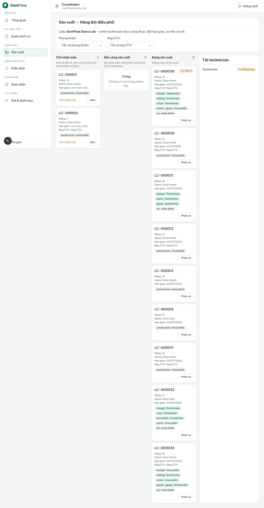

Vòng đời một case từ A đến Z
Đây là luồng xương sống của DentIQ Lab: một work order đi từ lúc phòng khám đặt đến tận bảo hành, trên một bản ghi case duy nhất mà cả phòng khám lẫn labo cùng đọc realtime. Trang này kể toàn bộ hành trình theo máy trạng thái, để bạn hình dung mỗi bước ai làm gì và điều gì gác không cho nhảy bước.

Bối cảnh
Phòng khám A đặt một mão zirconia răng 36 cho một bệnh nhân, gửi labo B. Đơn số tới trước, mẫu vật lý (dấu silicone) ship riêng và tới sau. Ta theo case này chạy hết một vòng đời "sạch": đặt → sản xuất → QC pass → giao → phòng khám nhận, rồi điểm qua các nhánh phát sinh (redo, bảo hành) có thể rẽ ra sau khi giao.
Diễn viên & quyền cần
| Vai trò | Quyền/điều kiện | Hành động |
|---|---|---|
| Nha sĩ / lễ tân (clinic) | Clinic-side của cạnh clinic↔lab | Đặt đơn (submitted), xác nhận đã nhận (delivered), báo lỗi (redo/warranty) |
| Điều phối (lab) | Lab-side; vai điều phối | Tiếp nhận (accepted), phân technician, ghi nhận mẫu vật lý, đẩy vào sản xuất |
| Technician (lab) | Được phân case | Chạy các công đoạn sản xuất (in_production) |
| QC (lab) | Vai QC | Chấm cổng QC: pass → ready_to_ship, trượt → về in_production |
| Giao nhận (lab) | Vai giao nhận | Tạo chuyến giao (shipped → delivered) |
| Kế toán (lab) | Vai kế toán | Ghi công nợ / thanh toán, đóng case (closed) |
Quy trình từng bước
- Đặt —
submitted. Phòng khám gửi work order (qua quét QR, không cài app). CờsampleReceived=falsemặc định vì mẫu vật lý còn trên đường. - Tiếp nhận —
accepted. Điều phối nhận đơn, xác nhận giá + hạn. Có thể accept trước khi mẫu tới (nhận về mặt giấy tờ), nhưng chưa được vào sản xuất. Thiếu thông tin →rejected→ phòng khám sửa và gửi lại. - Nhận mẫu vật lý. Khi mẫu tới labo, điều phối xác nhận →
sampleReceived=true+ ghisampleReceivedAt(mốc tính SLA). Đây là cờ song song, không phải một state riêng — nhưng nó gác cạnh vào sản xuất. - Sản xuất —
in_production. Chỉ vào được khi có technician được phân vàsampleReceived=true(hoặc case STL-only). Case chạy qua các công đoạn design → milling → sinter → polish/glaze. Có thể tạm dừngon_holdhoặc gửi thửtry_incho ca phức tạp. - Kiểm định —
qc. Xong công đoạn → vào cổng QC. QC chấm checklist 6 hạng mục. Pass →ready_to_ship; trượt → quay lạiin_productionđúng công đoạn lỗi. - Chờ giao & giao —
ready_to_ship→shipped. Đạt QC, giao nhận tạo chuyến giao, chọn phương thức (tự giao / shipper / Grab-xe ôm / đối tác / relay bến xe), ghi bằng chứng. - Đã nhận —
delivered. Phòng khám xác nhận đã nhận (hoặc lab ghi nhận thay mặt, có ghi rõ ai/lúc nào). Không case nào vàodeliverednếu chưa từng qua một lần QC pass. - Nhánh phát sinh (nếu có). Sau giao có thể rẽ:
redo(lỗi phát hiện lúc/ngay sau giao — ghi lý do + bên chịu trách nhiệm, quay lạiin_production) hoặcwarranty(hỏng sau giao, còn hạn bảo hành). Mọi vòng lặp đều đi lại qua QC. - Đóng —
closed. Đã giao + đã thanh toán/ghi công nợ, hết phát sinh → kế toán đóng case. Mọi nhánh cuối cùng hội tụ vềclosed.
Kết quả mong đợi
- Case đi đúng đường
submitted → accepted → in_production → qc → ready_to_ship → shipped → delivered → closed. - SLA/trễ hạn được tính từ
sampleReceivedAt, không phải từ lúc gửi đơn số. - Không case nào vào
deliveredmà chưa từng đạt QC pass (bất biến BR-W2). - Mọi redo/warranty đều ghi lý do + bên chịu trách nhiệm; case giữ bản ghi truy được (ai chỉ định shade/material, phôi/lô nào thực dùng).
- Cả phòng khám và labo thấy cùng một trạng thái realtime.
Khi nào hỏng & cách xử lý
| Triệu chứng | Nguyên nhân | Khắc phục |
|---|---|---|
Không đẩy được case sang in_production | Mẫu vật lý chưa tới (sampleReceived=false) hoặc chưa phân technician | Ghi nhận mẫu vào (đóng leg inbound) + phân technician; case STL-only thì coi như đã nhận mẫu ngay |
Case treo ở submitted nhưng mẫu quá hạn dự kiến chưa tới | Sự cố mẫu vào (thất lạc trên đường ship) | Mở trạng thái sự cố mẫu vào, cảnh báo hai phía qua Zalo, yêu cầu gửi lại / lấy dấu lại; sản xuất vẫn bị gác |
Cố chuyển thẳng sang delivered mà chưa qua QC | Bỏ qua cổng QC | Bất khả thi theo máy trạng thái — phải qua qc → ready_to_ship bằng một lần QC pass (BR-W2) |
| Trễ due date | SLA chạy từ khi nhận mẫu; công đoạn kéo dài | Cảnh báo trễ nổi ở lab board + đẩy Zalo cho clinic; ghi lý do trễ |
| Thao tác chuyển trạng thái bị từ chối | Sai cạnh clinic↔lab hoặc sai vai (mặc định từ chối) | Chỉ đúng actor trong đúng cạnh mới trigger được transition (BR-W4); kiểm lại vai và quyền |
sampleReceived là một cờ trên case (chân vật lý), không phải một state — nó gác cạnh accepted → in_production. Case full-digital (STL-only) coi như sampleReceived=true ngay khi submitted. Vòng in_production ↔ try_in có thể lặp nhiều lần cho ca phức tạp (răng trước/cầu).